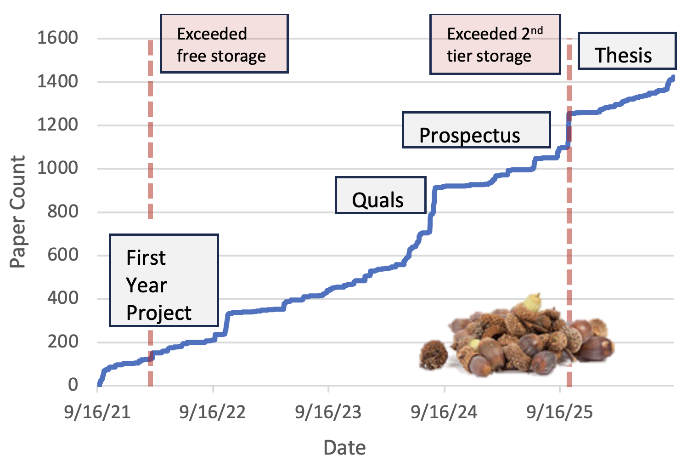
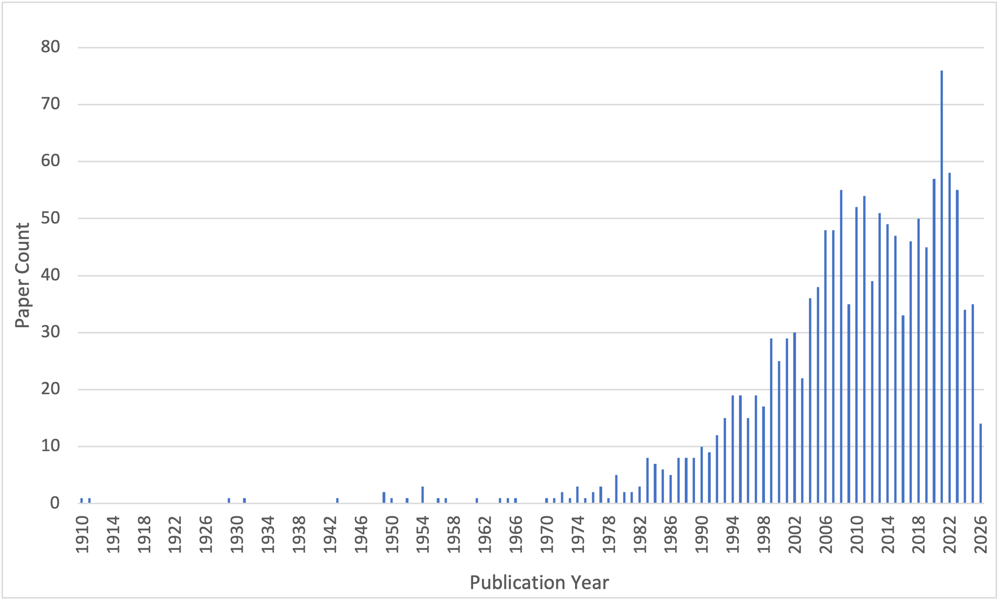

Literature Review as a Way of Life
09-Nov-2026
Research Practices
As I work on the introduction to my dissertation, revisiting the literature that shaped my scientific identity, I've been reflecting on how my relationship with academic literature has changed over five years of graduate school. In particular, my workflow involves continually adding to and drawing from a personal Zotero library, a process I value both for efficiency and for what it’s taught me about science and my place in it. As researchers consider incorporating AI tools into their reading practice, I think it’s more important than ever to recognize what about the “old ways” may be worth intentionally preserving.
Collecting Acorns
Like many graduate students, my literature review practice evolved somewhat less than intentionally. Before my PhD, I had read broadly but had little experience citing more than a handful of references for course projects. Then I was advised that the demands were about to accelerate and it was time to start using a reference manager like Zotero or Mendeley. It would save me time, I was told, by automatically formatting citations according to journal standards. I tepidly agreed, unaware that it could also do so much more.
Upon installing Zotero and making a free account, I manually entered the titles, authors, and publication dates of key references recommended by my advisors and professors, still deeply unsure whether I would ever become enough of a scientist to cite them in a publication of my own. Meanwhile, I was tasked with finding a small project to undertake during my first year. I read narrowly, focusing on papers my advisors had written that I could conceivably extend, occasionally letting myself get drawn into a related paper that piqued my interest but was beyond my grasp. I never saved these in my library because why do all that work for something you may never actually read?
Eventually, I discovered (or they released?) the Zotero Connector browser extension, and my mindset completely changed. I could now save a paper from any journal website with just a click. It felt good to let my unbridled curiosity open 50 browser tabs without the commitment to read them all immediately. As you can imagine, my Zotero library quickly became a “to-read” list that has not stopped growing to this day (Figure 1). And while I would never diminish the time-honored academic initiation ritual of accumulating a miles-long to-read list, I eventually realized that my searchable library was more useful than I anticipated.
Authorship and Ownership
Ironically, this repository of other people's work, augmented with my own notes, tags, and annotations, has become the most personal expression of how and what I think (at least until my thesis is done...)
Even as my collection filled with information that I hadn’t meaningfully absorbed, I found that its real value lay in its curation. For example, I could often answer a question more successfully by searching my own database of papers than by using a search engine. Those papers, after all, had found their way into my library because they had methods related to my own, had been cited by people I work with, or operated at a scale that interested me. That kind of specificity is nearly impossible to coax from Google Scholar, especially when it depends on factors you can’t yet articulate. Plus, nothing beats the satisfaction of finding you don’t have to begin a search from scratch because you already squirreled away the perfect information to address your question. Or someone else’s! (My scientific love language is sharing papers that make me think of someone else's work.)
Over time, this practice also helped me recognize, navigate, and communicate the human side of science. Early in graduate school, I was frustrated by my inability to remember specific authors and publications. My memory for facts had gotten me through undergraduate coursework, but I rarely remembered where I'd read something, let alone who had published it. I envied peers who could effortlessly orient a conversation around key scientists and their contributions.
Repeatedly returning to my curated library helped me develop that skill. I was forced to notice which authors appeared again and again, which papers answered recurring questions, and how ideas developed across publications. Gradually, I began to recognize not just individual findings but the people and conversations behind them. Not only did this improve my communication, but it was also a helpful reminder that ideas at the forefront of science are not cold and objective. They are the result of real people’s hard work and collaborative effort as they work from their own perspectives and under the constraints of their circumstances.
Of course, there is a practical limit to how much time one can spend collecting. Unlike acorns, forgotten papers don’t grow new life on their own. At times, you have to pause reading to make your own contribution to the conversation. But continuing to read alongside my own work gave me a more robust view of my place in science, even as it challenged my immediate sense of confidence.
Tripping over Acorns: Literature Review Should Humble You
If you'll allow me to brag, I'll say that I'm very good at finding stuff. I don’t believe I've ever encountered an idea that I couldn’t locate in an existing publication (at least in some form or another). More often than you’d expect, there's not just one paper that broaches the topic, but a whole field of dedicated people who’ve been probing it for decades. But as useful as that skill may sound, it’s a double-edged sword.
On the positive side, I've been able to show several people the feasibility of incorporating their varied interests in their research. In particular, I’ve mentored prospective graduate students who were disappointed that they couldn't combine their passions for creative writing and birds, gender studies and neuroscience, or knitting and physics, for their PhD. They assumed that because these interests didn't fit neatly together on a university's list of departments, they’d eventually have to pick one and leave the other behind. So far, I've always been able to show them that the intersection exists. Somewhere, someone is really studying it, sometimes from several different angles at several different institutions.
On the other hand, I’m often forced to overhaul my own ideas to reach the moving goalpost of “originality”. The sinking feeling of finding out that your next project has already been published is one that every graduate student knows well, but I’ve personally learned a lot from encountering it over and over. In fact, I’ve come to believe that no scientific idea is entirely original. We're all part of a centuries-long tradition of knowledge-making, standing on the shoulders of giants who stand on the shoulders of turtles all the way down, etc.
The most valuable contributions typically aren't wholly new ideas, but ideas approached from a different perspective, demonstrated or communicated more effectively, or introduced to a new audience. It takes incredible creativity and skill to iterate on existing ideas and add your perspective to an existing conversation. There’s more to science than raw originality, even in fields that disproportionately prize it (computational modelling, physics, mathematics). As long as it took me to accept this, acceptance is what freed me from an endless cycle of delaying my own contributions until I was sure they were mine alone (what some graduate programs call “finding your niche”).
Here, by the way, is an article I found that expresses similar ideas from a more practical perspective.Gill, P., & Dolan, G. (2015). Originality and the PhD: what is it and how can it be demonstrated? Nurse Researcher, 22(6), 11–15.
Here's another that investigates how evaluators actually quantify originality in multiple dimensions and may be the reader’s entry point into the sociology of science.Guetzkow, J., Lamont, M., & Mallard, G. (2004). What is Originality in the Humanities and the Social Sciences? American Sociological Review, 69(2), 190-212.
Finally, see this review of an article about originality in science, which the reviewer holds to be unoriginal.
Robot Squirrel – AI for Literature Review
There is no shortage of discourse about the use of AI tools in literature review, and no doubt that researchers are using them to produce products (background sections, introductions, methods sections) and to direct their thinking (identify “literature gaps” and contradictions). At this stage in my career, I have chosen not to integrate AI too heavily into my literature search habits. This is mostly because I have been so satisfied with my AI-free experience so far and so grateful for what I have learned through it that I wouldn’t want to risk foregoing those benefits. As other researchers are being faced with the same choice, not all of them having had the same prior experience, I thought it might be valuable to raise some specific cautions.
First, I worry that AI will make it harder than it already is for small labs and lesser-known researchers to gain citations and recognition. By its very construction, AI finds and prioritizes papers that are already relatively prominent and interconnected with others. However, many of my own most important realizations have been prompted by the work of smaller labs, often in non-Western countries, publishing in smaller journals which even Google Scholar is hesitant to recommend. It is unproductive to exclude these contributions from citations if their perspective is relevant and even more damaging to ignore them when considering where future research efforts would be best spent. I have seen some researchers, however, who claim to have the opposite experience, with AI suggesting the citation of papers they find too niche. I would be interested to see an investigation of the driving factors behind this.
I’m also wary of losing touch with older work. It seems to me that AI is less likely to recognize the relevance of papers which were not originally published online, as they may not be thoroughly indexed. But revisiting old ideas with modern perspectives has produced some of the most important scientific advancements and driven some of my own best insights (Figure 2). Discarding old papers also risks disconnecting scientists from their history. Several iterations of solely AI-directed literature search which leaves out foundational works could give the impression that a question is new, or that its intellectual foundations are shallow, doing a disservice to past, present, and future researchers.

Finally, and perhaps most obviously, the act of finding, filtering, organizing, and searching a reference library has been central to my development as a scientist. As I discuss above, it has helped me recognize the humans behind my favorite scientific work and envision myself among their ranks. It also helped me articulate my scientific interests by bringing out patterns in what drew my attention (in my case, invertebrate motor circuits, homeostatic plasticity, and behavioral flexibility) while situating these interests in the wider field.
An especially salient expression of these patterns (and useful case study) is the tagging system I have developed. A useful tag, of course, needs to be broad enough to apply to multiple works but specific enough to distinguish them from others. This is far from a trivial task, but such tags will naturally identify prominent arguments, perspectives, or subtopics which come up repeatedly in cited work and exist in conversation with other arguments, perspectives, and subtopics. So, while I would have had limited success at the beginning of my graduate career outlining the arguments of my thesis, I was already working towards that goal by organizing my Zotero library.
Could I have automated this process and come up with a satisfactory result? I’m inclined to think not. Looking at my list of tags today, I can’t imagine them coming from any perspective but my own. Plenty of papers, for instance, have tags that are not at all representative of their actual main points. I’ve saved them for small claims they’ve made, methods they’ve used, or even my strong disagreement with their conclusions. These labels would be useless to my colleagues, my advisor, and in some cases even my past self. Categories have shifted, split, merged, and disappeared according to projects I’m working on and what I’ve come to believe are the fundamental joints at which nature should be carved. But at the same time, these shifts usually came before I was able to articulate what caused them. I couldn’t have directed an artificial agent to make these adjustments because I didn’t know what was driving them for me. But, once I did realize their source, I invariably felt ownership over the idea behind them and was excited to communicate it to others. I can’t help but imagine that outsourcing this task would have left me feeling alienated from the ideas that grew out of it.
Even the technology that I have chosen to incorporate has impacted my experience. I can’t imagine how this approach would have worked before reference managers like Zotero, which itself has substantially improved over five years of use. An update released just last week has allowed article text to be indexed by search terms and this has already led to the realization that evolutionary search methods are more popular than I thought. And perhaps if I had used a physical library for all my literature search, I would by now have a deeper understanding of the impact of publication venues on defining the bounds of a field (not to mention big muscles from moving all those stacks). All this is to say that I’m still open to the benefits afforded by new technologies, but also cognizant of their cost.
A Collection of Experience
These practices have undoubtedly been shaped by the circumstances of my field and program. For one thing, I had the complete freedom to choose what I wanted to study from the very beginning of my degree, influenced by but relatively independent of the work of my lab mates and advisors. This came with the great burden of actually making that choice and the nagging fear that my decisions wouldn’t be good or “original” enough to carry me through. But it also allowed me to develop scientific intuition and taught me to trust it. The result is a thesis topic that I feel genuine pride in and have complete ownership of, while still acknowledging its place in the long history of inquiry in (computational) neuroscience.
But if any this advice seems like it could be useful, make a note. You never know when it’ll come in handy.
My Zotero library is publicly viewable here: https://www.zotero.org/ljstolting/library
© Lindsay Stolting. Designed by HTML Codex